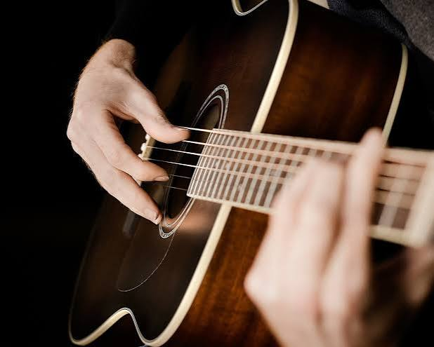

В свободное время я занимаюсь разными увлечениями.
Мне нравится слушать музыку, смотреть фильмы и изучать новые технологии.
Мои увлечения
Здесь можно узнать, чем я занимаюсь в свободное время.

В свободное время я занимаюсь разными увлечениями.
Мне нравится слушать музыку, смотреть фильмы и изучать новые технологии.